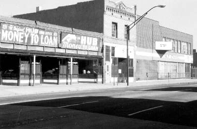

Larimer Street at 20th, Western Side

Larimer Street, looking toward 21st, western side
21st and Larimer, southwest corner

``I hitch-hike to Denver and...drink huge beers in Larimer Street saloons.''
[Jack Kerouac to John Clellon Holmes, June 24, 1949. Letters, p. 198]
Literary Kicks
Neal's Denver
Contributed by
Andrew Burnett